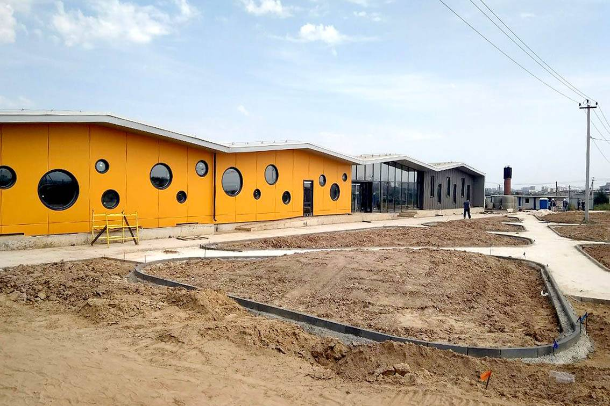

15 мая 2023
С радостью сообщаем, что началось строительство нового приюта для животных под эгидой нашего фонда "ДоброДел". Этот шаг является значительным продвижением в нашей миссии по оказанию помощи бездомным и нуждающимся животным.
Новый приют располагается на обширной территории и будет оснащен современными ветеринарными учреждениями, просторными вольерами и комфортными зонами для отдыха животных. Кроме того, предусмотрены специальные помещения для реабилитации и социализации животных, а также образовательные зоны для посетителей и волонтеров.
Проект приюта разработан с учетом лучших практик ухода за животными и направлен на создание безопасной, здоровой и стимулирующей среды для наших четвероногих друзей. Мы также акцентируем внимание на экологической устойчивости и эффективности использования ресурсов.
Строительство приюта стало возможным благодаря поддержке наших пожертвователей и партнеров. Мы благодарим всех, кто внес свой вклад в этот важный проект и приглашаем всех желающих присоединиться к нам, чтобы помочь в его завершении и последующей деятельности.